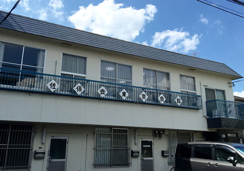

佐保会東京支部をより身近なものとして感じていただけるよう、支部の活動を簡単にご紹介します。
毎年5月の定時総会で、これらの活動や決算の報告と承認、活動計画や予算の決定をします。

佐保会東京支部では、見学会や講演会や、講座、同好会をなどを通じて会員同士の交流を図り、お互いの親睦を高めています。ご興味のあるイベントがありましたら、是非参加してみませんか？
仕事、結婚など様々なご都合で東京へ転居される方、登録住所が変更の際は、住所変更のご連絡をお願いします。
いつも佐保会東京支部の活動に、ご理解・ご協力いただきありがとうございます。会の運営は皆様の会費により支えられています。是非納入くださいますよう、お願いいたします。